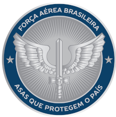

FAB( Força Aérea Brasileira ) BAGL/GSD-GL - 4 anos.
Responsável pela parte Administrativa do setor de Recrutamento.
Duração: 2018 - 2022.
Aprendi muita coisa durante esse período, mas vale destaca a organização, trabalho em equipe, Disciplina. Lidávamos em media com 250 à 350 militares sobre nossa responsabilidade semestralmente.
Durante esse período Fazíamos toda a iniciação na carreira deles, cuidávamos dos dados pessoais, auxílios, transgressões, escalas, entre outras. Com isso o BANCO DE DADOS e a ORGANIZAÇÂO foram cruciais.